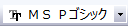
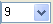

ノートウィンドウ
NoteWindow-Names
新しいノートウィンドウを開く
- 標準ツールバーの新しい行列ウィンドウボタン
 をクリックします。
をクリックします。
または、
ノートウィンドウの制御
メモメインメニュー
ノートウィンドウを新規で作成すると、メインメニューにメモが追加されます。
- サンプルのロード：HTMLファイル、MDファイルなどの組み込みサンプルをロードします。
- ロード: 他のファイルをロードします。
- リンクを追加：グラフおよびワークシート、セル値、表、行列、文字列、および変数を、アクティブなノートウィンドウに追加できます。
- テキスト、HTMLおよびMarkDownシンタックスでは、メニュー内にワークシートセル、情報変数、ワークシート、グラフ/画像、ボタン、 コンボを追加できます。リンクの構文を参照してください。
- Originリッチテキスト構文の場合、メニューにワークシートセル、情報変数、グラフ/画像を追加することができます。
- Webページにエクスポート: 現在のノートウィンドウをhtmlファイルなどのWebファイルとしてエクスポートします。これは、レンダリングモードがオンであるときにのみ、有効です。
- レンダリングモード: Originリッチテキスト/HTML/ MarkDown構文をレンダリングして、現在のノートウィンドウの情報をさまざまな形式で表示します。
- プレースホルダーの編集：HTML / MarkDownソースのプレースホルダーを編集します。
- プレースホルダーの編集を選択してHTML#ワークシートを開き、これらのプレースホルダーを編集してセルリンクをコピー＆ペーストして、ソースの変更によって更新できる値を挿入できます。
- シンタックス: シンタックスを切り替えます。
- テキストとOriginリッチテキスト/HTML/ MarkDown間で切り替えでき、Originリッチテキスト、HTML、MarkDown間で切り替えはできません。Originリッチテキスト / HTML / MarkDown間で切り替えるには、まずテキストにする必要があります。
- 行番号を表示：コンテンツのある行のヘッダーに行番号を表示します。
ウィンドウタイトルバーのコンテキストメニュー
ウィンドウのタイトルバーを右クリックすると、ノートウィンドウを制御するための項目がいくつかあることがわかります。
- グラフ/画像、ワークシートセル、情報変数を追加: これらのオブジェクトをノートに挿入します。
- Webページにエクスポート: 現在のノートウィンドウをhtmlファイルなどのWebファイルとしてエクスポートします。これは、レンダリングモードがオンであるときにのみ、有効です。
- ノートに名前を付けて保存：現在のノートウィンドウをテキスト/ LabTalkスクリプト/ html / MarkDownファイルとして保存します。
- 印刷: 現在のノートウィンドウを印刷します。
- ウィンドウを固定: ウィンドウを固定し、ウィンドウの整列機能実行時に対象から除外します。
- 非表示: 現在のノートウィンドウを隠します。非表示にすると、プロジェクトエクスプローラーのグレーアウトしたアイコンをダブルクリックしてノートウィンドウに戻ることができます。
- 複製: 現在のノートウィンドウを複製します。
- レンダリングモード: Originリッチテキスト/HTML/ MarkDown構文をレンダリングして、現在のノートウィンドウの情報をさまざまな形式で表示します。
- プレースホルダーの編集：HTML / MarkDownソースのプレースホルダーを編集します。
- プレースホルダーの編集を選択してHTML#ワークシートを開き、これらのプレースホルダーを編集してセルリンクをコピー＆ペーストして、ソースの変更によって更新できる値を挿入できます。
- シンタックス: シンタックスを切り替えます。
- テキストとOriginリッチテキスト/HTML/ MarkDown間で切り替えでき、Originリッチテキスト、HTML、MarkDown間で切り替えはできません。Originリッチテキスト / HTML / MarkDown間で切り替えるには、まずテキストにする必要があります。
- プロパティ：ウィンドウプロパティダイアログを開いて、ウィンドウ名、コメント、ウィンドウタイトルを制御します。
ノートウィンドウに名前を付ける、ラベルを付ける
- ノートウィンドウのタイトルバーを右クリックして、プロパティを選びます。Alt+Enter でウィンドウプロパティダイアログを開きます。
- ロングネーム、ショートネーム、またはコメントを入力して、ノートウィンドウに名前を付けます。
- タイトルバーにロングネームとショートネームを表示する方法を制御するには、ウィンドウタイトルドロップダウンリストを使用します。
- OK ボタンをクリックします。現在のノートウィンドウの詳細情報をチェックするために情報タブに切り替えることができます。
フォントとフォントサイズの制御
フォーマットツールバーのフォントとフォントサイズを使ってノートウィンドウでのフォントとフォントサイズを制御します。
- 
- フォントは全てのノートウィンドウで共有されるため、単一のノートウィンドウでフォントを変えると全ての他のノートウィンドウにも適用されます。
- フォントサイズはそれぞれのノートウィンドウで独立して制御されます。
- 変更されたフォントとフォントサイズは、今後のすべてのノートウィンドウのデフォルトとして使用されます。システムデフォルトに戻す場合には、Originを閉じ、ユーザファイルフォルダにあるOrigin.iniを開き、[Notes]セクションにあるフォントとフォントサイズの行を削除します。Origin.iniを保存してOriginを再起動します。
- Ctrl+マウスホイールを使ってノートウィンドウのズームイン、ズームアウトが行えます。
- Ctrl+Mでノートウィンドウのレンダリングモードの切り替えができます。レンダリングモードでは、ズームパーセントドロップダウンリストが標準ツールバーで有効になります。
テキストの折り返しをオンにする
- ノートウィンドウがアクティブな状態で表示：右端で折り返すを選択することでテキストの折り返しの有効無効を切り替えるとこができます。
- Alt+Enterを押すことでウィンドウプロパティダイアログを開いてページ幅を設定できます。次に、Ctrl+Mでテキストの折り返し効果を表示します。
ノートウィンドウの内容をファイルに保存する
- ノートウィンドウのタイトルバーを右クリックしてノートに名前を付けて保存を選択します。またはメモウィンドウをアクティブにして、ファイル：ノートに名前を付けて保存メニューを選択します。
- ファイルの種類ドロップダウンリストから希望の形式を選択し、ファイル名を入力してと保存をクリックします。
HTML/MarkDown言語の入力およびレンダリング
- ノートウィンドウを新規作成し、HTML / MarkDownスクリプトをノートウィンドウに入力します。
- メモ: シンタックス: HTML/MarkDownメニューを選択するか、タイトルバーを右クリックしてシンタックス:HTML/MarkDownコンテキストメニューを選択します。
- 次に、メモ: レンダリングモードメニューを選択するか、タイトルバーを右クリックしてレンダリングモードコンテキストメニューを選択、またはCtrl+Mを押して現在のウィンドウのスクリプト行をレンダリングします。編集可能な状態と編集不可能な状態を切り替えるには、ウィンドウワークスペースの任意の場所をダブルクリックするか、Ctrl + Mホットキーを押します。
|
Note:デフォルトでは、ノートウィンドウはOriginリッチテキストモードに設定されています。
新しいノートウィンドウにスクリプト行を入力したら、Ctrl + Mホットキーを押してフォーマットと内容をプレビューできます。
スクリプトをプレビューするのに適したシンタックスを設定するには、system variable @NPSを使用します。@NPS = 0 はHTMLとしてスクリプト行を設定し、 @NPS = 1 はMarkDown として設定します。
|
ノートウィンドウの内容をWebページにエクスポート
- ウィンドウのタイトルを右クリックしてレンダリングモードを選択します。
- ウィンドウのタイトルバーを右クリックして、 Webページにエクスポート...を選択するか、メニューのメモ:Webページにエクスポート...を選択します。
- ファイル名を入力して保存します。
Note:
- Webページにエクスポートメニューは、ノートウィンドウが現在レンダリングモードの場合にのみ使用できます。
- ノートウィンドウをHTMLファイルとしてエクスポートすると、必要なPNGファイル（Originグラフから生成され、ノートウィンドウで参照されます）もエクスポートされ、HTMLファイルと同じフォルダに配置されます。
|
シートにワークブックに挿入
ノートウィンドウはシートにワークブックに挿入できます。
ワークブックのシートタブを右クリックして、シートにノートを追加を選択します。